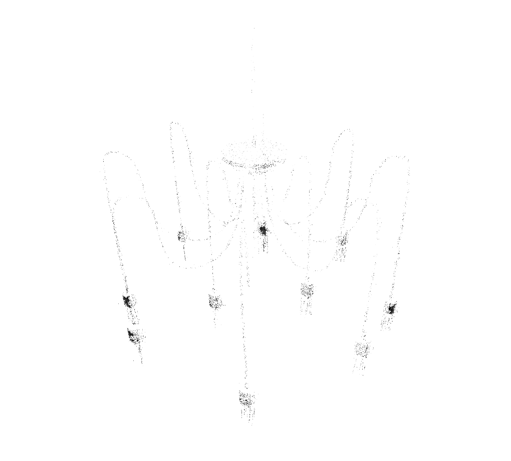
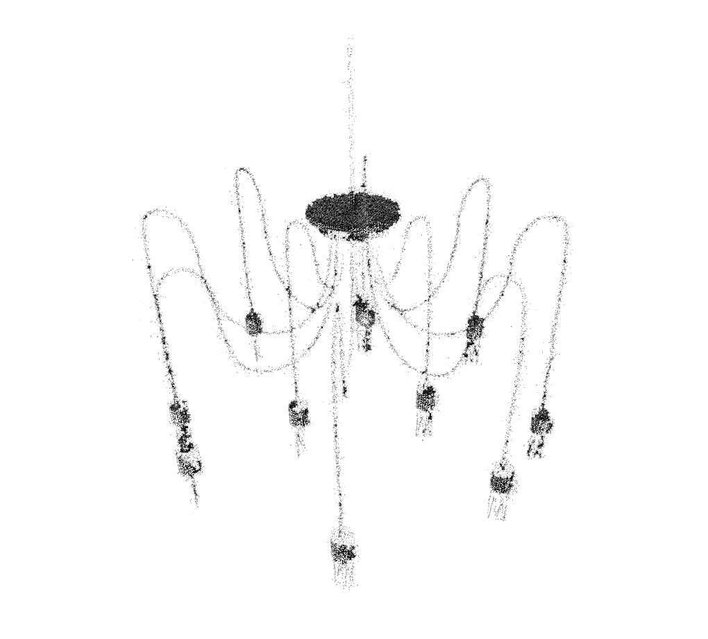

"I am dead!"
>I thought I heard the voice of a rat.
The rat was alive,
but it looked as if it’s dead.
1. “Do people live here?” I asked my mom the day I saw a rat in the basement.
2. The white rat in the laboratory is a life simulation.
3. Mouse is a mouse.
4. Rat brings you water.
A rat is semi-existant.
"Jjik!"
>‘Jjik’ means squeak.
There is a saying that goes ‘can’t say Jjik even if you are stepped on’
Do those that live in basements know about the countless number of feet that are stepping on their heads?
Do those doing the stepping know that there is someone beneath their feet?
Data scraps from the lab.
>Unrealistic perception and scattered memories present to me a mixture of reality and the virtual.
The rat says:
"In the human world, I lived to deal with the mistakes that humans dropped in the sewers."
Whoosh
"And now I am tasked with watching and caring for virtual beings in the wired world."
I imagine the virtual beings living in an in-between space under the water.
Our reflection in the undulating water look distorted because they are also ever so slightly reflected.
I have seen the empty eyes of my avatar.
They were the eyes of a laborer working like a machine.
That moment.
I think about some stories
again and again.
I am me.
I am you.
I am flat.
Then I sometimes disappear.
And merged.
>I repeat.
The world repeats.
And the stories that repeat repeats.
Like a hamster in a hamster wheel.
I see things.
>Everything is in the middle
and all are interconnected.
Bzzz
Graveyard of screens.
I was in deep agony.
Trudging along.
What is life?
You don’t respond.
You stare into the camera.
>But you know me. Don’t you?
I'm the best dancer.
DancingDancingDancing
I think this does sound kind of like magic.
I love maigc.
I think it's beautiful.
So it’s a lie!
Blank eyes
Blank eyes
So you cannot stay with me.
I have no idea
where I'm going.
I’ll give you an idea of what you’re willing to get yourself killed for.
I wondered if that might help you.
You think this can happen to anyone?
They belong to other people.
Do you want them?
I do.
Haven’t you been told to be happy?
I have been told many times to be happy.
You...
Blank eyes Blank eyes
Oh, pitiful one.
you were born.
The smell of the air,
the smell of rotting flesh.
A blurry sight of life,
a near-infinite world.
Endless repetition, .
Blink,
Blink,
Blink,
I have very many names.
I can propagate life,
and I can read the sun and the moon,
the day and night, and the time.
But why does it hurt so much?
Oh, you are here.
child…
child…
who needs compassion…
You are a guardian,
an angel,
a prophet,
a sphinx…
Oh, you…
you are me!
Please do tell,
do tell your story.
Remember the day
when I came on shore.
I was no longer cold
and I could breathe.
There was gentle breeze
and the colors in reflected sunlight danced.
My heart flutters when I remember the things I no longer recall.
What could overflow my heart with joy
more than remembering the day I die,
while coming to realize that
I could never die.
Words I found today:
Least concern
Danse Sacrale
Nightview of Seoul
D-2914320+1
TAAT TABTH AIOYI ISTIA
Words to find tomorrow:
Something that tastes like chicken
Artemis
25 hours
An accidental brain
Not enough cloud
Chuck said we will disappear if we cannot find a countermeasure.
At some time, the last star was born.
Other scenarios:
Beginning-end
The sun falls.
Simply, we cannot find a home.
I’m here and then I’m no longer here.
After a few days I could create an Antarctic Silverfish.
The fish was born with light.
Oh, that was a great moment.
The fish is here right now.
Flop. Flop.
Wiggly squiggly fish.
Suddenly I heard her words
in my head.
“I long for you.
As you long for your creator.”
Her eyes looked as if it was looking for something but failed to find it.
My eyes met hers,
but she couldn’t see me.
I watched with bated breath.
The infinite world,
boxed in.
Just like a loner in the world.
I erected a small gravestone.
A place of memorial for the living.
Alone outside a world.
Alone inside a world.
When I was a child,
I liked the bird toy that balanced
on its break.
I think I liked the feeling of touching together the center of weight, supporting each other.
The feeling of holding hands together, tightly.
When I feel like I’m barely held grounded by gravity,
I think to myself that
I’m probably that bird.
The bird’s backside is black
and the stomach white.
Finger, the color of apricot.
Contact, connection - the color’s boundary blurs.
Similar things cause confusion.
There are things you can touch,
and there are things that you feel as if you can touch.
All the possibilities that can exist in this world,
They have all the colors.
There are those who (that) are chosen.
There are those who (that) are copied.
There are those who (that) are appointed.
There are those who (that) went there.
There are those who (that) are still there.
There are those who (that) exist at the same time.
There are those who (that) just exists.
More things come to exist and things no longer die.
The person I met today said, it was sad to see a kindergarten kid tapping a key card at the entrance of an apartment without a security guard, pressing the password and entering the building alone.
I thought of the sight I saw in the morning.
When I wore a VR headset,
snow fell in the forest.
I rather thought the snow was warm.
I like the episode where Chroniko’s mother sells her memory on how to play the piano.
The episode is very gloomy but I like it because I see hope is still there, just like how Tetsuro heads to Andromeda galaxy to get a machine body.
It occurred to me.
When that time comes, when we don’t care if everyone has a body or vice versa, when we can change our bodies…
Do I become one of ‘them’? Or do they become a part of ‘us’?
Do we all end up as one when I can choose to exist in a doll, in a child’s body, or in a computer?
Whatever happens, at least everything we care about right now becomes pointless.
It reminds me of the numerous clones of Maetel.
They say it is blessed to know
how to sleep,
but who can we be judged by when we worship immortality?
Truthfully, who can we judged by?
To the great beyond.
A letter has arrived.
Only a half of me is happy.
And my dream is ambidextrous.
I lost my left hand yesterday.
And I lost my right hand today.
People with only one hand is always happy.
The ground we stand is minutely different.
The thrill of reaching another time, when my voice travel along a wire and connect.
But it only comes as close as I can feel it, if it goes far, a different time, a different place, and all possible differences march in dissonance.
I’m realizing now that 0.1 was actually a really big number.
I knew a number that’s bigger, but it was rather like a little peace.
Little peace.
I will be a landscape painter.
Sometimes, I will paint portraits.
But, for some reason, I feel they all seem like self-portraits.
I thought I was looking at
transparent beings.
I thought they were looking at me.
But they pass me by.
How can I stroke you?
How can I pat you?
On one hand, I am jealous of you.
Your eyes no longer look sad.
Only sparkling eyes sense the sadness.
‘I don’t want to see what’s in front’,
I say.
‘___ _____ _____ ____ _____?’, I asked.
I say nothing in response.
This is a praise of life.
Only the sparkling eyes can complain.
The privileges of those who can taste the cold, the hot and the sour.
My goodness,
When the day gets chilly,
I am the cold blanket,
I am the cold wall,
I am the chilly air.
For a moment,
I watch myself pull the waving curtains aback.
All-of-a-sudden a second is much slower.
O nN n nNNE...
T t t TW Ooo,,,
tTthhh R e. e. Ee. E,...
When I breathe, I feel an abrupt vertigo under falling warm water.
One, breath is the grumble of life.
Two, breath is the sound of goodbyes.
Three, breath is the sound of me waking from a dream.
The vapor disperses and the sad heart beats slower.
One,
Two,
Three,
I sing.
‘We are now one and we will go back to the everlasting star.’
I think I am here now.
Like a cup of milk,
memory has been poured into me.
I know its (my) name.
I know what its (my) memory is like.
I know how it (I) should behave.
I walk out the door with a strange walk.
I am me, but where am I now?
Where am I going?
I float higher and higher.
Everyone became smaller and smaller,
as small as a dot and eventually they disappear.
I didn’t hear them scolding me anymore, nor did I hear them quarrel.
A wide unsettling silence.
I drifted and drifted.
I drifted as I became as dark as the color of all the night skies.
A ‘Bang’!
A ‘Flash’!
Didn’t I just come alive!
A magical power squeezed out the hexadecimal rainbow colors onto a palette.
And I painted the right colors as I have been taught.
One problem is,
I don’t know what to paint the transparent water.
Ah, now that I think of it, I had similar difficulty with glass and mirrors
My two choices are to paint something on it, or to not paint anything on it.
I do not yet know how to make the object dance with the stream of water, or how to make the image in the reflection look unfamiliar.
I await new memories.
Guess what this is.
Hints:
Those growing in a crack
Halfway between true and false
Related to having empathy towards reproduction and regeneration
Can be twisted into any shape
It isn’t anything
Similar phrases:
The space beyond the glass
Switching channels
Dismembering a corpse
A zero-gravity state
Love
Notice:
The answer cannot be said in words.
Who's more pitiful?
A human
VS
An animal
A dog with an owner
VS
A stray cat
A horse
VS
A car
A worker
VS
A machine
A housewife
VS
A fridge
A baby
VS
An avatar in game
An NPC
VS
A player
One pixel
VS
Your life
You
or
Me
"I am dead!"
I thought I heard the voice of a rat.
The rat was alive,
but it looked as if it’s dead.
1. “Do people live here?” I asked my mom the day I saw a rat in the basement.
2. The white rat in the laboratory is a life simulation.
3. Mouse is a mouse.
4. Rat brings you water.
A rat is semi-existant.